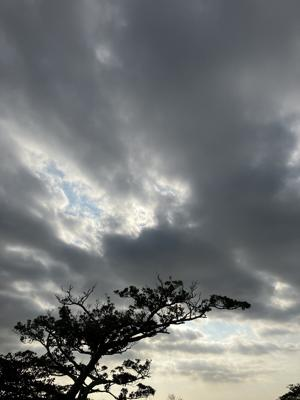
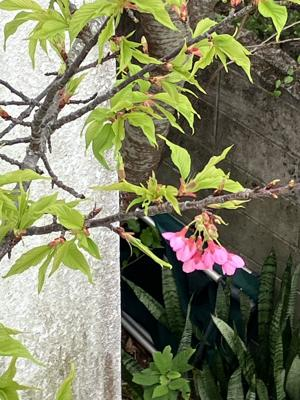

うるがいの話 ある日
最新: 葉桜【うるがいの話 ある日】とは 一日だけのプログです
『うるがいの話』の最新一日だけのプログで、通信料が少なく経済的だ。カニの画像をクリックすると全ての日付が載る『うるがいの話』サイトを表示します
|
|
【うるがいの話】 うるがい(ｳﾙｶﾞｲ urugai)とは、『もずくがに』の名前でとても大きくなります。 |
|---|---|
|
|
【カミマヤーの話】 猫のことを方言でマヤーといいます。カミマヤー（kamimayaa）とは、神の猫のことです。 |
|
【たながぁの音楽】 たながぁ（ﾀﾅｶﾞｰ tanagaa）とは手長えびのことで、何種類かあり大きいのは車 エビぐらいになります。 |

|
【ぶながぁの話】 ぶながぁ(ﾌﾞﾅｶﾞｰ bunagaa)とは、赤い髪の毛、赤い身体、そして身長は１ｍ２０ｃｍ ぐらい、川の蟹を食べているの目撃された。場所は沖縄県国頭郡大宜味村のと ある村僕の隣近所に住んでいる爺さんから、聞いた話です。 |
|
|
【ギーマの話】 ギーマ(giima)とは、山原の里山に咲くスズランに似た、 花を付けます。実は食べられます、 気が付くと口の周りが紫になっています。 |
2024年02月18日 (日）葉桜
15:07

ベランダから、桜の木をみると葉っぱがかなりの大きさに成長している。そ
の枝にもまだ、花をつけている。いつもと違う桜の木である。

『桜色の風が咲く』（盲ろう者として世界で初めて大学教授となった息子と
その母の実話）の映画を見る。ん、なんか感動し流れていた【ベートーヴェ
ン：ピアノソナタ第８番（悲愴）第２楽章】の三線動画を作ることにした。
仕事を初めてから、出勤は週二日の午後の半ドンだけど、ほぼ休みなしで研
修動画と戯れている。そのため、趣味の三線動画活動が停止してしまった。
チャンネル登録している人達に申し訳ないと、思ったわけだ（ウソ）。だが
よ、しばし、そもそも三線で演奏できるか？、イントロだけ楽譜を試作する
ま、大丈夫かな。でも、そもそもイントロいがいまともに聞いたことがない
で、動画の演奏でメロディーを確認する。フムフム、なんとかなりそうだ。
ただね、ピアノの楽譜が複雑で７３小節もあるのですよ。いつになるやら、
なお、楽譜は著作権がない、パブリック ドメイなるもの。
１４時５７分 ビットコインの総資産 ￥２２、４８８（↓１５４）